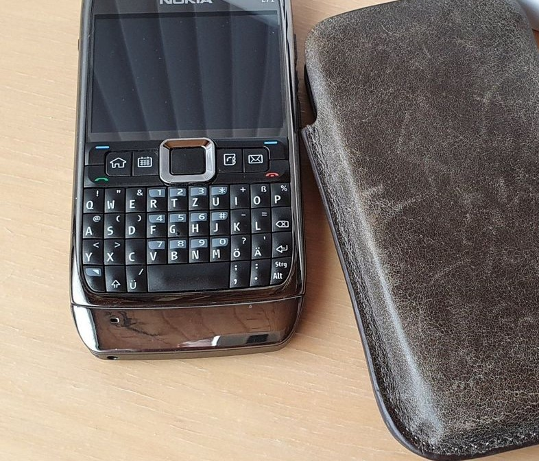

Sorry, natürlich das
12 Mini

Liebe Community,
Bin seit der ersten S-Serie von Samsung parallel zu anderen Smartphones Kunde. Ab 28.01.2021 ist die neue S21 Serie vorbestellbar, nun würde mich interessieren, was ihr von den neuen Samsung Smartphones haltet und ob ihr euch eines davon kauft und vor allem was für eines?
Alle genannten sind mir viel zu groß, ich warte bis wieder einmal ein kleineres Modell wie das A3 (2017) auf den Markt kommt
(womöglich vergeblich :-p)
vor 30 Minuten schrieb hawkeye:(womöglich vergeblich :-p)
Das IPhone 11 Mini ist derzeit das kleinste 5G Smartphone, habe es parallel zu meinem S20+ 5G in Verwendung kann mich aber damit nicht wirklich anfreunden.
Sorry, natürlich das
12 Mini

Also ich denke auch gerade nach.
Komme aber aus der Note Welt und warte noch ab, ob es auch ein Note 21 geben wird.
Im Grunde sind die Geräte sicher toll, das Kameramodul ragt halt gewaltig raus, was mich schon stört.
Aber offenbar kompensieren das die Hüllen - die z.B. das Suncase.
Und keine Benachrichgtigungs LED - die fehlt mir auch.
Aber das Design ist sonst wirklich Spitze . ein schönes Gerät.
vor 3 Minuten schrieb Christian_E:Komme aber aus der Note Welt und warte noch ab, ob es auch ein Note 21 geben wird.
Die Note Serie bei Samsung wurde leider eingestellt , du kannst allerdings die neuen S21 auch mit einem S-Pen bedienen. Fine es schade, dass Samsung keine Note Smartphones mehr produziert.
Bist du dir ganz sicher?
Da gibt es noch ein paar wiedersprüchliche Aussagen im Netz.
https://www.chip.de/news/Galaxy-Note-21-Verwirrung-um-Release_183188405.html
Ja nur der Pen bei den großen Modellen kann man nicht gut verstauen. Diese Lösung ist nicht optimal.
vor 15 Stunden schrieb Rexalius2000:Liebe Community,
Bin seit der ersten S-Serie von Samsung parallel zu anderen Smartphones Kunde. Ab 28.01.2021 ist die neue S21 Serie vorbestellbar, nun würde mich interessieren, was ihr von den neuen Samsung Smartphones haltet und ob ihr euch eines davon kauft und vor allem was für eines?
Zu welchem Modell tendierst du?
vor 13 Minuten schrieb Christian_E:Zu welchem Modell tendierst du?
Zum S21 Ultra da die anderen nur ein FHD+ Display haben, unverständlich warum man das bei den etwas schwächeren Modellen diesmal nicht anbietet. Mein 20+ 5G hat WQHD+. Bin noch auf die ersten Tests gespannt ob diesmal der Exynos nicht soviel Strom zieht den das ist ein großer Nachteil im vergleich zu Geräten mit Snapdragon Prozessoren die in den USA erhältlich sind. Mich stört es weniger wenn kein Ladekabel oder Headset mehr dabei ist, Samsung ist wohl den Trend vom abgebissenen Apfel gefolgt, wobei sie das bei der 12er Serie von Apple sehr kritisiert haben. Meinung & Ersteindruck - SwagTab
vor 32 Minuten schrieb Christian_E:Ja nur der Pen bei den großen Modellen kann man nicht gut verstauen. Diese Lösung ist nicht optimal.
Das stimmt, dass ist bei der Note Serie eindeutig besser gelöst. Was für ein Note hast du derzeit in Verwendung?
vor 7 Minuten schrieb Rexalius2000:
Das stimmt, dass ist bei der Note Serie eindeutig besser gelöst. Was für ein Note hast du derzeit in Verwendung?
Aktuell noch das Note 8. Das ist echt ein super Gerät aber jetzt will ich das langsam in den Ruhestand schicken.

vor 1 Minute schrieb Christian_E:Aktuell noch das Note 8. Das ist echt ein super Gerät aber jetzt will ich das langsam in den Ruhestand schicken.
")
Bekommt es noch Sicherheitsupdates?
vor 15 Minuten schrieb Rexalius2000:
Zum S21 Ultra da die anderen nur ein FHD+ Display haben, unverständlich warum man das bei den etwas schwächeren Modellen diesmal nicht anbietet. Mein 20+ 5G hat WQHD+. Bin noch auf die ersten Tests gespannt ob diesmal der Exynos nicht soviel Strom zieht den das ist ein großer Nachteil im vergleich zu Geräten mit Snapdragon Prozessoren die in den USA erhältlich sind. Mich stört es weniger wenn kein Ladekabel oder Headset mehr dabei ist, Samsung ist wohl den Trend vom abgebissenen Apfel gefolgt, wobei sie das bei der 12er Serie von Apple sehr kritisiert haben. Meinung & Ersteindruck - SwagTab
Also ich finds schade, dass man da wieder zwischen US und EU verschiedene Prozessoren anbietet.
Bei uns kommt ja der hauseigene Samsung Prozessor rein - ich bin gespannt - wie du auf den Stromverbrauch.
Wie gehst du mit dem großem Kameramodul um?
Das Smartphone liegt doch nie eben am Tisch. Wackelt das nicht ziemlich?
vor 2 Minuten schrieb Rexalius2000:
Bekommt es noch Sicherheitsupdates?
Ja noch....
vor 1 Minute schrieb Christian_E:Also ich finds schade, dass man da wieder zwischen US und EU verschiedene Prozessoren anbietet.
Bei uns kommt ja der hauseigene Samsung Prozessor rein - ich bin gespannt - wie du auf den Stromverbrauch.
Wie gehst du mit dem großem Kameramodul um?
Das Smartphone liegt doch nie eben am Tisch. Wackelt das nicht ziemlich?Ja noch....
Das Kamera Modul hat mich beim S20 Ultra sehr gestört, es erbrachte auch nicht die Leistung was ich mir erwartet habe daher wechselte ich nach gut 3 Wochen zum S20+ 5G. Beim neuen S21 Ultra sollten ja die Kamera nicht so weit hervorstehen. Notfalls gleiche ich es aber mit einem TPU Case aus. Die Kamera und Zoom sollte ja diesmal besser sein.
Auf die Kamera bin ich definitiv gespannt. Die verspricht wirklich viel.
Was mich aber beim S20 gestört hat, war die enttäuschende Akkuleistung. Da bin ich auch noch gespannt, was die neue Serie kann.
Die ersten Tests werden es zeigen.
vor 6 Minuten schrieb Christian_E:Was mich aber beim S20 gestört hat, war die enttäuschende Akkuleistung.
Ja, das ist ein Nachteil der S20 Serie. Wenn man noch 120 Hz eingeschalten hat und in einem Gebiet mit 5G Versorgung sich befindet, kann man regelrecht den Akku zuschauen wie schnell er an Leistung verliert. Es empfiehlt sich daher eine Powerbank mitzunehmen. Mehr als 1 Tag ohne Laden komme ich aber so und so nicht durch, manchmal muss es auch 2-mal laden. Mit dem 25 Watt Ladegerät ist das S20+ 5G aber in ca. 1.20h wieder auf 100 % . Habe ja noch ein 12 Mini in Verwendung, auch dort ist der Akku nicht der beste obwohl es ja angeblich mit IOS 14.3 besser sein sollte was ich aber nicht bestätigen kann. Irgendwie trauere ich meinen 11 Pro Max nach den da war der Akku echt Leistungsstark.
Bei meinem Note 8 hab ich nie auf die höhere Auflösung geswitched. Das war für mich auch OK.
Im Grunde läuft mein Note 8 mit etwa 2% Akkuverbrauch/h, natürlich nur passiv. Und da macht es aber trotzdem einiges, weil ich mit KLWP ein paar nette Themen erstellt habe.
In der Nacht geht der Verbrauch auf 0 bis 1%/h runter.
Dahingehend war ich mit dem Note 8 bisher sehr zufrieden.
Aber abwarten, was die ersten Tests zeigen.
Ach ja iOS hab ich mir auch mal angesehen. Das geht bei mir gar nicht, denn ich finde die Gestaltungsmöglichkeiten unter Android einfach toll. Bei iOS ist das eine Katastrophe aber dafür war bei meinem getesteten iPhone die Akku Leistung wirklich gut.
Und dann machte ich mal einen Schwenk zu LG mit dem G4 aber auch da wurde mir schnell klar, dass Samsung bei vielen Dingen doch die Nase vorn hat.
Also bleib ich mal dabei und hoffe, dass es bald eine klare Aussage geben wird, ob noch doch noch ein Note Modell raus kommen wird.
War auch kurzfristig mal bei HUAWEI(Mate 20 Pro) Akkuleistung und vor allem die Zeiss Kamera, echt der Hammer. Der Sprung vom damaligen S9+ auf das S10+ war mir einfach zu gering daher mal kurzfristig ein Umstieg auf Huawei. Aber jetzt habe ich wieder ein Samsung. Ja, IOS ist eine Sache für sich so wirklich hat es mich auch nie überzeugt aber die Updatepolitik was Apple betreibt ist sehr gut! Mein altes IPhone SE aus dem Jahr 2016 bekommt heute noch Updates im Gegensatz zu meinem A5 von 2017.
Ja wobei da hat sich Samsung auch gebessert. Mein Note 8 bekommt auch noch Sec Updates. Zumindest die High End Modelle werden gut versorgt. Was mich generell bei Android stört ist, dass die Major Updates nach 2 Jahren, oder vielleicht 3 Jahren nicht mehr verteilt werden. Das ist schade, da gefällt mir die Politik von Microsoft wieder deutlich mehr, denn da werden ältere Notebooks auch lange noch mit Updates versorgt.
Was soll man davon halten?
https://www.youtube.com/watch?v=k3uBsuuzs0E
Sieht tatsächlich nach einem Note 21 aus.
Nach längerem Hin und Her wirds wohl doch das S21 Ultra werden.

Die Note Serie ist offenbar nicht wirklich am Radar und die ersten Tests sind für das Ultra echt sehr positiv. Das sieht gut aus.
Hat jemand hier schon das S21 und kann was berichten?
Bei mir wurde es heute ein S21 Ultra und mein S20+(5G) kommt in den verdienten Ruhestand
 .
.
Ja sehr cool!
Hast ja schnell zugeschlagen.
Kannst mal ein wenig berichten, wie es dir damit geht und wie deine Erfahrungen sind?
Vor allem möchte ich das Teil gerne mit Stift betreiben. Und der Akku würde mich auch interessieren, denn der soll ja richtig gut sein.
Und dann eben das Handling u.s.w.
Wäre super - Danke dir

Ich hätte schneller zuschlagen sollen also unter den Vorbestellern zu sein. Ein SmartTag sowie ein Paar Galaxy Buds gratis zum Smartphone hätte es obendrein dazugegeben.
Also ich bin echt Mega zufrieden, der Zoom ist der Wahnsinn und erst das Display. Akku mäßig wurde es etwas besser aber meines empfinden immer noch etwas zu schwach für 5000 mAh. Der Exynos saugt wahrscheinlich immer noch ziemlich viel an Energie. Habe es in Schwarz mit 512 Gigabyte gekauft. Auch wenn der Speicher groß ist würde ich mir zusätzlich einen SD Slot wünschen . Somit könnte ich meine 1TB Card weiterverwenden. Grundsätzlich aber ein sehr gutes Smartphone, wenn nicht das beste derzeit am Markt

Vielleicht hole ich mir noch das Samsung Silicone Cover mit S Pen.
Klingt ja schon mal gut.
Ich bin da der Fan von den SunCase Hüllen. Die haben eine Silicon Hülle und die Leder Tasche.
Mein Note 8 hat da echt einen tollen Schutz und trotzdem trägt die Hülle gar nicht so dich auf.
Werden übrigens handgefertigt in DE.
Allerdings will ich den Stift auch unbedingt aber da kommt das Problem - wo geb ich den dann hin?
Wie ist das mit dem Silicon Cover?
Ja 512GB werde ich auch mindestens konfigurieren.
Liebe Community,
Bin seit der ersten S-Serie von Samsung parallel zu anderen Smartphones Kunde. Ab 28.01.2021 ist die neue S21 Serie vorbestellbar, nun würde mich interessieren, was ihr von den neuen Samsung Smartphones haltet und ob ihr euch eines davon kauft und vor allem was für eines?
Hatte bei Samsung immer das View Case und bei meinem Iphone 12 Mini derzeit die von Spiegen.
Silicone Case mit S Pen
vor 3 Minuten schrieb Rexalius2000:Hatte bei Samsung immer das View Case und bei meinem Iphone 12 Mini derzeit die von Spiegen.
Silicone Case mit S Pen
Ja macht Sinn. Sieht gut aus.
Ich bin halt der Fan eher von solchen Lösungen. Bin viel im Stall unterwegs und da kommt jede Menge Mist zusammen.
Da brauch ich ein bissi mehr Schutz

https://suncasestore.de/samsung/galaxy-s21-ultra/schutzhuelle-mit-tpu/214/suncase-leder-etui-fuer-samsung-galaxy-s21-ultra-huelle-mit-zusaetzlicher-schutzhuelle-case
Ich bin noch beim Überlegen ob ich mich für Samsung Care+ entscheide. Hatte zwar nur 1x einen Crash mit meinem alten S8+ aber trotzdem wäre es eine zusätzliche Sicherheit. Display kostet ja 399 € für das S21 Ultra.
Galaxy S21 Ultra 5G
149 €
59 € (Selbstbehalt)
2 Schadensansprüche während der Versicherungsdauer (2 Jahre)
Der Selbstbehalt kommt mir hoch vor.
Aber klar - beim Displaybruch ergibt das Sinn aber das ist dann auch der Worst Case und man zahlt schon 210€.
Aber zum Nachdenken wäre das schon, da hast du recht.
Wobei ich allerdings sehr auf meine Hardware aufpasse, hab auch zusätzlich ein Panzerglas 9h auf allen meinen Geräten. Nur damals hat mein Hund gemeint er muss gegen den Tisch rennen und mein S8+ "küsste" die Terassenplatten aus Beton .
Oje... Ich hab ja nicht mal Folien. Haben dir die wirklich was gebracht? Ich mein die Display sind ja eh schon richtig gut und wenn es runter fällt, dann hält doch die Folie auch nicht oder?
Andere Frage.
Was mein Note8 hat ist eine LED - die haben die neuen Modelle gar nicht mehr.
Wie machst denn du das? Hast du Always on aktiv oder wie lässt du dich benachrichtigen. Ich hab die LED's immer geliebt.

Hatte damals kein Panzerglas drauf. Von Folien halte ich nicht viel da die nicht optimal schützen und auch gerne beim aufbringen Blasen erzeugen. Das Panzerglas legst einfach nach der Reinigung mit Alkohol und Microfasertuch auf das Display. Nur der Fingerabdrucksensor am Display macht mit dem Glas etwas Probleme.
vor 2 Minuten schrieb Christian_E:Andere Frage.
Was mein Note8 hat ist eine LED - die haben die neuen Modelle gar nicht mehr.
Wie machst denn du das? Hast du Always on aktiv oder wie lässt du dich benachrichtigen. Ich hab die LED's immer geliebt.")
Always on funktioniert mit dem View case nicht aber mit dem S-Pen Cover sollte es keine Probleme geben da dies ja immer geöffnet ist. Ich überprüfe meine Benachrichtigungen mit der Galaxy Watch
OK. Dann bleib ich mal bei der SunCase. Die macht ihre Sache schon gut, solange man das Teil dann nicht außerhalb der Hülle fallen lässt.
Weil es mir gerade einfällt, beim Kauf der S20 Ultra vor gut 1 Jahr war am Anfang die Samsung Care+ kostenlos dabei.
Galaxy Watch hab ich auch... Hmmm ja ist halt eine Gewohnheitssache. Ich geh oft beim Smartphone vorbei und wenn nix blinkt, dann hab ich auch nix.
Wie sehen die Einstellungsmöglichkeiten bei AOT aus? Ist da was passiert seit den letzten Generationen oder immer noch eher spartanisch?
vor 2 Minuten schrieb Rexalius2000:Weil es mir gerade einfällt, beim Kauf der S20 Ultra vor gut 1 Jahr war am Anfang die Samsung Care+ kostenlos dabei.
Das wäre ein geiles Angebot

Nur das S20 Ultra war wirklich nicht ausgereift.
Na dann hoffen wir mal, dass das S21 Ultra dann die Kinderkrankheiten nicht mehr hat.
Aber die Testberichte sind durchaus gut...
Habe das Gerät nun auch.
Akku beeindruckt mich schon - hält deutlich länger wie bei meinem letzten Note.
Ein wenig fehlt mir aber der Stift, denn auch wenn ich mir einen dazu bestelle, weiß ich dann nicht, wo ich den hingeben soll...

vor 3 Stunden schrieb Christian_E:Ein wenig fehlt mir aber der Stift, denn auch wenn ich mir einen dazu bestelle, weiß ich dann nicht, wo ich den hingeben soll...
Dafür gäbe es eine Hülle mit einem Fach für den SPen.
Danke. Schon klar.
Als Fan einer SunCase Hülle fällt diese Option flach.
Und wenn man es aus der Note Serie gewohnt ist, den Stift in das Smartphone zu stecken, dann fehlt einem das.

Aber ja - es gäbe Optionen aber die sind für mich keine.

Bin auch beim überlegen ob ich mir das Pen Case kaufe doch knapp 50 Euro und das Gerät wird wuchtiger lässt mich noch etwas zweifeln. @Christian_E hast du die Samsung Care+ Option auch dazugenommen?
ich warte schon monatelang auf ein "kauffähiges" SAMSUNG Galaxy S20 128GB 4G, Cosmic Grey - aber das gibt es offensichtlich nicht
(mehr), außer (lt. geizhals.at) bei ein paar so kleineren "Dealern"
Nein! no risk - no fun

Aber die SunCase Hüllen bieten echt maximalen Schutz.
Ich will auch nicht, dass das Ding noch größer wird.
Aber ich bin soweit mal zufrieden - echt schnell das Teil. Kamera Top aber was ich echt nicht verstehe - selbst dieses Teil hat Apps vorinstalliert, die ich am Smartphone echt nicht brauche. Beispiel: Netflix

vor 3 Minuten schrieb hawkeye:ich warte schon monatelang auf ein "kauffähiges" SAMSUNG Galaxy S20 128GB 4G, Cosmic Grey - aber das gibt es offensichtlich nicht
(mehr), außer (lt. geizhals.at) bei ein paar so kleineren "Dealern"
Warum nicht gleich das S21?
vor 4 Minuten schrieb hawkeye:ich warte schon monatelang auf ein "kauffähiges" SAMSUNG Galaxy S20 128GB 4G, Cosmic Grey - aber das gibt es offensichtlich nicht
(mehr), außer (lt. geizhals.at) bei ein paar so kleineren "Dealern"
Das S20 ist ein Auslaufmodell. Die Dinger lassen sich auch nicht mehr so gut verkaufen was ich bei meinem alten S20+ 5G leider feststellen musste und verschwinden aus dem Portifolio.
Wobei ich sagen muss - bei einem großen Online Händler mit A....
 ist selbst das S21 256 schwer erhältlich.
ist selbst das S21 256 schwer erhältlich.
Hab letztendlich bei einer Elektronik Kette mit M... am Anfang
 zugeschlagen - da gabs kurzzeitig sogar die Galaxy Active 2 Watch zu einem super Preis dazu.
zugeschlagen - da gabs kurzzeitig sogar die Galaxy Active 2 Watch zu einem super Preis dazu.
Ich habe auf Geizhals verglichen und dann dort bei einem Händler zugeschlagen. Hoffentlich hast du bei dem großen Händler mit M den Newsletter Gutschein geordert.

Liebe Community,
Bin seit der ersten S-Serie von Samsung parallel zu anderen Smartphones Kunde. Ab 28.01.2021 ist die neue S21 Serie vorbestellbar, nun würde mich interessieren, was ihr von den neuen Samsung Smartphones haltet und ob ihr euch eines davon kauft und vor allem was für eines?
Den hab ich zuvor schon geklickt und mal kassiert.
Dafür bin ich jetzt Club Mitglied bei M - und könnte länger umtauschen

Aber bei der Summe, die ich da gezahlt habe, machen so kleine Gutscheine echt das Kraut nicht mehr fett.
Ich frag mich schon manchmal, wieso man so blöd ist, soviel Geld für ein Smartphone auszugeben aber das ist eine andere Sache

vor 11 Minuten schrieb Christian_E:Den hab ich zuvor schon geklickt und mal kassiert.
Dafür bin ich jetzt Club Mitglied bei M - und könnte länger umtauschen
Aber bei der Summe, die ich da gezahlt habe, machen so kleine Gutscheine echt das Kraut nicht mehr fett.
Ich frag mich schon manchmal, wieso man so blöd ist, soviel Geld für ein Smartphone auszugeben aber das ist eine andere Sache
Wir sind doch alle Nerds 😃
Zumindest ein kleines bisschen

Andere Frage noch...
Als ehemaliger Note8 Besitzer fehlt einem schon die Benachrichtigungs LED.
Ich weiß ja, dass es das AOD gibt aber das saugt wieder nur Akku.
Hast du das in Verwendung?
Im Grund ist es nicht so sehr tragisch, weil ich ja auch über meine Galaxy Watch informiert werde aber sie fehlt mir trotzdem...
vor 8 Stunden schrieb Christian_E:Warum nicht gleich das S21?
ich hab nicht einmal einen 5G - Tarif, sondern den kleinsten Mobiltarif, den es gibt (noch aus UPC-Zeiten übernommen) und selbst den schöpfe ich nur zur Hälfte aus
 - zudem wird auch ein 500 ,-- - Smartphone meinen "Ansprüchen" gerecht - relativ wichtig ist mir die Kamera - und die soll ja beim S20 auch schon recht gut sein.
- zudem wird auch ein 500 ,-- - Smartphone meinen "Ansprüchen" gerecht - relativ wichtig ist mir die Kamera - und die soll ja beim S20 auch schon recht gut sein.
vor 13 Minuten schrieb hawkeye:relativ wichtig ist mir die Kamera - und die soll ja beim S20 auch schon recht gut sein.
Kommt auf deine Anforderungen an. Mit dem low light,Zoom und Makro Modus bist du mit einem S21 Ultra um Meilen voraus. Vielleicht ist auch das S20 FE was für dich den das würde in deiner Preisklasse als Neugerät liegen.Bin mir sicher,dass auch bald die alten UPC Tarife ins 5G Netz dürfen,war damals bei Tele.ring genauso.
Danke für die Infos, aber + und Ultra sind mir zu groß, aber es wird wohl doch gleich ein S21 werden. In Relation gesehen dann doch wohl das neuere Modell g'scheiter - und zumindest mal für einen allfälligen 5G-einstieg gewappnet zu sein, kann ja auch nicht schaden.
Bestimmt,du bekommst auch länger Updates (3 Jahre).
Ja das Update Thema war bei mir auch ausschlaggebend und die Kamera ist wirklich ein Traum. Damit muss man sich aber mal näher beschäftigen.
Was mir aber auffällt - der Fingerprint Sensor hat bei der alten Note Serie irgendwie besser funktioniert.
Beim S21 braucht es mehr Druck - beim Note8 ging das fast im Drüberstreifen.
Aber klar - der Fringerprint liegt beim S21 ja unter dem Glas... Gefällt mir nicht so gut aber sonst alles Top!!!
Noch eine Frage:
Habt ihr die Schutzfolie, die von Anfang an drauf ist, drauf lassen?
Evtl. ist die auch verantwortlich, dass der Fingerprint etwas zäher funktioniert.
Hab ich noch drauf, bin aber i.d.R. kein Fan von Folien am Glas, weil das Glas an sich eh schon sehr hart ist...
vor 2 Stunden schrieb Christian_E:Noch eine Frage:
Habt ihr die Schutzfolie, die von Anfang an drauf ist, drauf lassen?
Evtl. ist die auch verantwortlich, dass der Fingerprint etwas zäher funktioniert.
Hab ich noch drauf, bin aber i.d.R. kein Fan von Folien am Glas, weil das Glas an sich eh schon sehr hart ist...
Richtig, der Fingerprint macht in der Kombination mit einer Schutzfolie in der Regel Probleme. Ich habe die vom Werk montierte Folie entfernt und ein Panzerglas mit der Aussparung für den Fingerprint angebracht. Leider ist es auch etwas schwierig diesen mit dem Glas zu nützen. Mir ist aber wichtig das mein Samsung optimal gegen Schäden geschützt ist und habe somit den Fingerprint deaktiviert.
Was hast du für eine Hülle im Einsatz?
vor 4 Minuten schrieb Christian_E:Was hast du für eine Hülle im Einsatz?
Samsung Clear View Cover.
Ja bei dieser Hülle darf dir das Handy wirklich nicht runter fallen.
Ich hab da quasi ja eine Notebooktasche

Was für eine verwendest du?
Die da und da kann das Smartphone definitiv auch auf einen harten Boden fallen:
https://suncasestore.de/samsung/galaxy-s21/schutzhuelle-mit-tpu/211/suncase-leder-etui-fuer-samsung-galaxy-s21-huelle-mit-zusaetzlicher-schutzhuelle-case
Ja und selbst nach 4 Jahren sieht das Leder noch Top aus. (ich hatte die schon beim Note 8)
Die Hülle ist es definitv wert, wenn man maximalen Schutz haben will.
Natürlich - wenn das Smartphone aus der Hülle heraussen ist, dann schützt nur noch der transparente Pumper aber auch der ist Top.
So eine ähnliche hatte ich mal mit einem Nokia E71

und keine guten Erfahrungen gemacht?
Es gab damals nicht wirklich viel Auswahl für das Nokia. Aber sie ist kein wirklicher vergleich zu deiner den diese schützt sicher optimal. Der Bumper ist der im Lieferumfang inkludiert?

Ja kommt auch vom Hersteller und passt somit optimal.
Alles im Paket.
vor 6 Stunden schrieb Christian_E:Ja das Update Thema war bei mir auch ausschlaggebend und die Kamera ist wirklich ein Traum.
Und vor allem erst der Zoom . Mein Mate 20 Pro was ich früher als daily driver hatte war auch nicht schlecht, aber das S21 Ultra schlägt derzeit für mich alle Rekorde. Aufgenommen mit 30 fachen Verlust freien Zoom.
Ja hab auch schon ein paar Experimente gemacht aber auch das Weitwinkel gefällt mir sehr gut.
Wie man soviel Optik in sowenig Tiefe rein bekommt, ist mir ein Rätsel aber das ist eben Technik in Vollendung.

Ich hab vor rund 2 Wochen das S21 Ultra bestellt und hoffe es jetzt bald zu bekommen :-)
Aktuell verwende ich noch das Samsung Galaxy Note 10+ 5G. 5g ist zwar richtig angenehm flott (Platin Tarif), aber der Strombedarf halt nicht so ideal.
Lg Mahlzeit
Ja,5G saugt ordentlich an Strom. Kann mich noch gut an mein erstes UMTS(3G) LG Handy erinnern. Auch da war der Stromverbrauch im 3G Netz sehr hoch. Zum Glück legte man damals noch einen 2 austauschbaren Akku bei.

Liebe Community,
Bin seit der ersten S-Serie von Samsung parallel zu anderen Smartphones Kunde. Ab 28.01.2021 ist die neue S21 Serie vorbestellbar, nun würde mich interessieren, was ihr von den neuen Samsung Smartphones haltet und ob ihr euch eines davon kauft und vor allem was für eines?
Am 6.2.2021 um 17:24 schrieb Rexalius2000:Ich bin noch beim Überlegen ob ich mich für Samsung Care+ entscheide. Hatte zwar nur 1x einen Crash mit meinem alten S8+ aber trotzdem wäre es eine zusätzliche Sicherheit. Display kostet ja 399 € für das S21 Ultra.
Wobei hier halt scheinbar Beschädigungen die die Verwendung des Displays weiter erlauben, aber eben unschön sind, offensichtlich nicht gedeckt sind.
"..Bildschirmschaden: Physische Beschädigungen, etwa Rissbildung oder Bruch des Bildschirms, welche die Funktionalität des Versicherten Produktes beeinträchtigen. Der Anspruch ist dabei beschränkt auf die zur Reparatur eines gerissenen oder gebrochenen Bildschirms und/oder Backcovers notwendigen Teile, etwa einen Glas- oder Kunststoffschirm, ein LC-Display und am Bildschirm befestigte Sensoren..."
Quelle:
https://www.samsungcareplus.com/docs/at/2007001/Care-plus-TermsAndConditions.pdf
Eine ordentliche Hülle und aufpassen, dann spart man sich das.
Welches Modell wird es denn bei dir? 265 oder gleich 512?
Bearbeitet von Christian_E
Wie ist eure Erfahrung mit dem S21 bisher?
Ich bin voll zufrieden und kann nach mehreren Monaten auch den Akku ziemlich loben, denn der hält bei mir auf alle Fälle 2 Tage und wenn ich nicht soviel drauf mache, dann komm ich sogar 3 Tage durch. Hab das S21 Ultra.
Wirkliche Bugs hab ich noch nicht gefunden - außer bei Gmail - da ist es mir schon passiert, dass ich bei einer Ansicht einfach hängen bleibe und die App kappen muss.
Die Kamera fasziniert mich aber wirklich. Was in diesem Gerät steckt, ist m.E. wirklich faszinierend.
Bereue den Kauf somit nicht.

LG
Christian
ich möchte mir demnächst ein S21 zulegen, finde , dass es aber derzeit noch zu teuer ist. ( zB Mediamarkt € 777,--)
Man muss vermutlich warten, bis das Nachfolgemodell auf den Markt kommt, oder?
Welches Modell meinst du denn?
weder + , noch Ultra - das S21 ohne Zusatz, das Standard, das "normale"
im Jänner 2022 soll ja das S22 auf den Markt kommen, habe ich gerade gelesen,
mit einer "Kamera, die alle Grenzen sprengt" ...
Bearbeitet von hawkeye
Ja jedes Jahr neue Errungenschaften.

Aber wenn du noch Zeit hast, dann wird es im Herbst für das S21 sicher noch interessante Angebote geben.
Ich kann es auf alle Fälle empfehlen - absolut ausgereift und läuft einfach verlässlich.
Die besten Preise für die Galaxy S Serie Geräte gibt es typisch zu Black Friday.
Dieses Mal ist die Verfügbarkeit der S20 Serie am freien Markt nach dem Jahreswechsel deutlich zurückgegangen, außer das FE.
Wenn die nächsten Galaxy S Serie wie die S21 Serie im Jänner raus kommt, solltest du also eher noch dieses Jahr zuschlagen.
Bearbeitet von NTM
Ja definitiv ein Tipp!
Allerdings ist es bis dahin schon noch eine lange Zeit - kann sein, dass es zuvor auch schon interessante Angebote gibt.
Danke für die sehr geschätzten Hinweise - ich behalte alles im Auge ;-)
Noch ein Tipp, den du sicher kennst:
Geizh*** - Preisagent aktivieren
Ich warte mal ab bis es wieder eine Eintauschaktion für das S22 Ultra gibt,vermutlich schlage ich dann zu

vor 2 Stunden schrieb Christian_E:Noch ein Tipp, den du sicher kennst:
Geizh*** - Preisagent aktivieren
Ja, danke - habe ich auch :-)
jetzt hat mich ein soeben gelesener "Forecast" allerdings sehr auf das 22er neugierig gemacht ...;-)
vor 10 Stunden schrieb Rexalius2000:Ich warte mal ab bis es wieder eine Eintauschaktion für das S22 Ultra gibt,vermutlich schlage ich dann zu
Echt - springst du immer auf das neueste Modell drauf?
Würde ich auch aber das ist mir alleine vom Einrichten schon zuviel Aufwand.

vor 8 Stunden schrieb hawkeye:
Ja, danke - habe ich auch :-)
jetzt hat mich ein soeben gelesener "Forecast" allerdings sehr auf das 22er neugierig gemacht ...;-)
Was hast du denn aktuell im Einsatz?
Wenn dein jetziges noch gut geht, dann kannst ja warten, obwohl - vor einem Jahr wird da der Preis sicher nicht attraktiv sein aber dafür hast dann neueste Technik.
Dennoch - das S21 gewinnt aktuell viele Tests und dürfte im Moment eines der besten Smartphones sein - einige Tests behaupten ja sogar - es ist das Beste, das jemals gebaut wurde.
ich habe derzeit das Galaxy A3 (2017! :-p ) im Einsatz, welches tadellos funktioniert.
(mit einer 30 GB SD-Card "verstärkt") - zusätzlich nutze ich das Magenta Mediencenter.
Bearbeitet von hawkeye
Oha - das ist aber schon ein Oldie.

Da würdest du mit einem S21 sicher große Freude haben. Allerdings, wenn du mit deinem jetzigen Gerät zufrieden bist - alles gut.
Ich denke aber vor allem die Kamera würde dich bei den neuen Modellen wohl überwältigen.

vor 1 Stunde schrieb Christian_E:Echt - springst du immer auf das neueste Modell drauf?
Würde ich auch aber das ist mir alleine vom Einrichten schon zuviel Aufwand.
Ja, meistens schon. Habe nur das S10+ ausgelassen da ich zu Huawei kurzfristig gewechselt habe.
vor 50 Minuten schrieb hawkeye:ich habe derzeit das Galaxy A3 (2017! :-p ) im Einsatz, welches tadellos funktioniert.
(mit einer 30 GB SD-Card "verstärkt") - zusätzlich nutze ich das Magenta Mediencenter.
Das A3 ist schon ziemlich alt, bekommt das überhaupt noch Sicherheitsupdates?
Ich geh mal davon aus - nein.
Denn erst seit der S20 Serie gibt es den Support von 3 Jahre und mehr.
am 1. 11. 2020 erfolgte das letzte Sicherheits-Update, ich weiß allerdings nicht in welchen Intervallen selbige erfolgen (soll(t)en).
Ist unterschiedlich.
Beim aktuellen Modell kommen die im Monatsintervall.
{kind=link}
{kind=link}